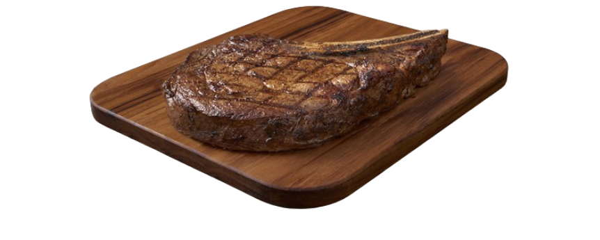
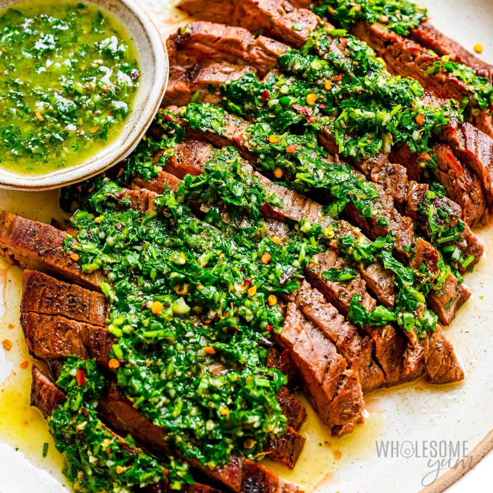

Introduction
Today we will be making a delicious steak to pair perfectly with a homemade chimichurri. I chose this recipe because I believe a hearty meal is a great thing to have after a long day. As well, a good seared medium rare steak paired with chimichurri never misses. I hope that this recipe makes you just a bit hungrier.
Ingredients*
Chimichurri Sauce
- 1 cup parsley leaves, tightly packed
- 1 tbsp oregano leaves, tightly packed
- 4 garlic cloves, minced
- 0 - 2 tsp red pepper flakes (optional - adjust to taste)
- ¼ cup (65 ml) red wine vinegar
- ½ tsp salt
- Black pepper
- ½ cup (125 ml) extra virgin olive oil
Steak
- 700g / 1.4lb flat iron, flank, skirt steak or other steak of choice, at room temperature
- Salt & pepper

Instructions
Chimichurri
- Place all ingredients except oil in a food processor. Whizz until parsley is finely chopped, but not pureed. Alternatively chop parsley by hand.
- Transfer into a small bowl. Add oil, gently stir. Set aside for 1 hour before use.
- Store in an airtight container in the refrigerator and use within 3 days. Makes ¾ cup.
Steak
- Take steak out of the fridge 30 minutes prior to cooking.
- Heat BBQ or heavy based skillet with 1 tbsp vegetable or canola oil over high heat until smoking.
- Sprinkle each side of steak generously with salt and pepper.
- Add steak and cook to your liking.
- Cook steak for 2½ minutes each side or until internal temperature reaches 57°C.
- Transfer to a plate, cover loosely with foil and rest for 5 - 10 minutes.
- Cut thin slices against the grain and serve with Chimichurri on the side.
